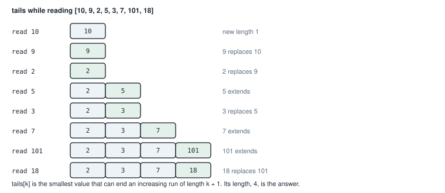

Recursion and dynamic programming
This chapter covers
- Recognizing a problem that can be built from answers to smaller versions of itself
- Filling a table of answers from the smallest case upward
- Listing every subset of a set by exploring a tree of choices
- The longest increasing run hidden inside a list, in O(n log n)
- Choosing jobs that do not overlap, to earn the most
Dynamic programming solves combinatorial optimization and counting problems by evaluating smaller subproblems once, tabulating their optimal solutions, and combining those results to solve larger instances. The paradigm applies whenever a problem exhibits two structural properties:
- Optimal substructure: An optimal solution to a problem instance can be constructed directly from optimal solutions to smaller subproblems.
- Overlapping subproblems: A direct recursive decomposition revisits the same subproblem instances repeatedly, so tabulating intermediate results collapses exponential recursion trees into polynomial time.
Five problems develop these principles in progression. Minimum-coin change presents bottom-up tabulation in its canonical form. Subset enumeration contrasts dynamic programming with exhaustive backtracking, where every distinct combination must be emitted and no overlapping subproblems exist. Longest increasing subsequence, weighted interval scheduling, and resource-constrained GPU scheduling combine dynamic programming with sorting and binary search.
Every dynamic programming derivation below begins by stating, in a single precise sentence, the invariant represented by one table entry. That statement defines the subproblem; once specified, both the recurrence relation and its implementation follow directly.
6.1 Making change with the fewest coins
The problem. Given a set of coin denominations with an unlimited supply of each, determine the minimum number of coins that sum to a target amount. With denominations 1, 2, and 5, the amount 11 requires three coins (5 + 5 + 1). Some target amounts have no valid representation; with only a coin of value 2, the amount 3 is impossible.
6.1.1 Why the obvious approach fails
A natural initial strategy selects the largest denomination that fits at each step. This greedy approach succeeds for denominations 1, 2, and 5, but it fails for arbitrary coin sets (Figure 6.1).

Consequently, the algorithm must evaluate every denomination at each step. Exhaustively enumerating every combination takes exponential time, whereas dynamic programming reduces the work to polynomial time.
6.1.2 The subproblem
Begin by defining the meaning of a single table entry:
dp[t]is the minimum number of coins that sum to exactlyt.
Consider the final coin placed in an optimal solution for t. If that coin has value c, the preceding coins must sum to t - c, and the fewest coins required for that remainder is dp[t - c]. Choosing coin c last therefore costs dp[t - c] + 1 coins. Because the optimal final coin is unknown in advance, the recurrence evaluates every valid denomination and retains the minimum:
dp[t]= the minimum ofdp[t - c] + 1over every coincsuch thatc <= t.
The base case is dp[0] = 0, since zero coins sum to zero.
Filling the table by hand for the denominations in Figure 6.1 (1, 3, and 4) up to amount 6 demonstrates how each row evaluates every fitting coin and retains the smallest count:
t | coins that fit | options from each coin | dp[t] |
|---|---|---|---|
| 1 | 1 | dp[0] + 1 = 1 | 1 |
| 2 | 1 | dp[1] + 1 = 2 | 2 |
| 3 | 1, 3 | dp[2] + 1 = 3, dp[0] + 1 = 1 | 1 |
| 4 | 1, 3, 4 | dp[3] + 1 = 2, dp[1] + 1 = 2, dp[0] + 1 = 1 | 1 |
| 5 | 1, 3, 4 | dp[4] + 1 = 2, dp[2] + 1 = 3, dp[1] + 1 = 2 | 2 |
| 6 | 1, 3, 4 | dp[5] + 1 = 3, dp[3] + 1 = 2, dp[2] + 1 = 3 | 2 |
The entry dp[6] evaluates to 2 (from 3 + 3). The greedy strategy required three coins for the same amount because it committed to 4 and never reconsidered earlier choices. Because the table records the optimal count for every smaller amount, each new entry reduces to a fixed number of lookups plus one.
Both structural properties are required for this recurrence to hold. Subproblems must overlap so that caching results avoids repeated work: both dp[6] and dp[5] read dp[1], and larger tables revisit each entry many times. Optimal substructure must also hold so that the best solution for t is composed from best solutions for smaller remainders t - c. If a better way to form t - c existed, dp[t - c] would hold that smaller count. When either property fails, the table produces an incorrect result.
Because dp[t] depends exclusively on entries for smaller amounts, the table can be populated from left to right. Figure 6.2 illustrates the completed table for denominations 1, 2, and 5, along with the dependencies used to compute dp[11].
![A table dp[0] to dp[11] with values 0 1 1 2 2 1 2 2 3 3 2 3; dp[11] is the smallest of dp[10]+1, dp[9]+1, and dp[6]+1](figures/dp-coins.svg)
dp[11], the three coins lead back to dp[10], dp[9], and dp[6].dp[t] reads. The last part shows greedy choosing three coins where two are enough.6.1.3 The code
Listing 6.1 Coin change (lines 6 to 29). src/problems/dp.rs
pub fn coin_change(coins: &[i32], amount: i32) -> Option<i32> {
if amount < 0 {
return None;
}
let amount = amount as usize;
let mut dp = vec![usize::MAX; amount + 1];
dp[0] = 0;
for total in 1..=amount {
for &coin in coins {
let coin = coin as usize;
if coin > total || dp[total - coin] == usize::MAX {
continue;
}
dp[total] = dp[total].min(dp[total - coin] + 1);
}
}
match dp[amount] {
usize::MAX => None,
count => Some(count as i32),
}
}Comparing the implementation against the recurrence clarifies each step:
- Negative amounts are rejected up front, ensuring that the cast
amount as usizeis always well defined. vec![usize::MAX; amount + 1]allocates one entry per amount from0throughamount, usingusize::MAXas a sentinel meaning “currently unreachable”.dp[0] = 0establishes the base case.- The outer loop advances from
1throughamount, while the inner loop evaluates every coin denomination. - The
continueguard skips any coin larger thantotalas well as any remaindertotal - cointhat remains unreachable. That second check also preventsusize::MAX + 1, which would overflow. dp[total].min(dp[total - coin] + 1)updates the entry with the smaller of the current best count and the new candidate.
WARNING The second condition in that continue statement is required for correctness rather than performance. Removing it breaks the function: when dp[total - coin] holds the sentinel, evaluating dp[total - coin] + 1 adds one to the maximum usize. In a debug build, the program panics with "attempt to add with overflow". In a release build, the addition wraps around to 0, and the final match interprets 0 as a valid count of zero coins, causing the table to report artificially small counts. Checking for the sentinel before adding is mandatory whenever usize::MAX represents an unreachable state.
At the end of the function, a match converts the final table entry into the return value. Matching usize::MAX produces None, while any other value yields Some(count). Returning Option<i32> ensures that callers cannot confuse an impossible amount with a valid coin count.
Because the table contains amount + 1 entries and each entry inspects every denomination, the algorithm runs in O(amount × coins) time and uses O(amount) memory.
Listing 6.2 The complete file. src/problems/dp.rs
//! Coin Change: minimum number of coins to make an amount.
//!
//! Classic dynamic programming. `Option<i32>` expresses "impossible" instead of
//! a magic `-1`.
pub fn coin_change(coins: &[i32], amount: i32) -> Option<i32> {
if amount < 0 {
return None;
}
let amount = amount as usize;
let mut dp = vec![usize::MAX; amount + 1];
dp[0] = 0;
for total in 1..=amount {
for &coin in coins {
let coin = coin as usize;
if coin > total || dp[total - coin] == usize::MAX {
continue;
}
dp[total] = dp[total].min(dp[total - coin] + 1);
}
}
match dp[amount] {
usize::MAX => None,
count => Some(count as i32),
}
}
#[cfg(test)]
mod tests {
use super::*;
#[test]
fn computes_minimum_coins() {
assert_eq!(coin_change(&[1, 2, 5], 11), Some(3)); // 5 + 5 + 1
assert_eq!(coin_change(&[2], 3), None);
assert_eq!(coin_change(&[1], 0), Some(0));
}
}Running cargo test --lib coin_change executes the test suite, which verifies the example from Section 6.1, an unreachable amount, and the base case of 0.
6.2 Listing every subset
Not every recursive problem requires a memoization table. When a problem demands every valid solution rather than a single optimum, recursion explores the entire decision space and there are no overlapping subproblems to cache.
The problem. Enumerate every subset of a set of distinct integers. A subset is any selection of elements, including the empty selection and the full set. The input [1, 2, 3] has eight subsets: [], [1], [2], [3], [1, 2], [1, 3], [2, 3], and [1, 2, 3].
The idea. Construct subsets one element at a time, starting from the empty subset. From any partial subset, append one additional element whose index is strictly greater than the indices of all elements already chosen. Enforcing this index order prevents duplicate permutations such as [2, 1] from appearing alongside [1, 2]. Figure 6.3 depicts these decisions as a tree in which every node corresponds to a distinct subset.

[1, 2, 3]. Each edge adds an element that comes after the last one chosen.To enumerate every node, the algorithm traverses the tree depth first, descending along one branch as far as possible before exploring its siblings. Descending pushes an element onto the active selection, and ascending pops it back off. This systematic search pattern is called backtracking.
start keeps [2, 1] out of the result.Listing 6.3 Subsets by backtracking. src/problems/backtracking.rs
//! Subsets: enumerate every subset of a set of distinct integers.
//!
//! Backtracking with clean `path.push(...)` + recursive exploration + `pop`.
//! `Vec<Vec<i32>>` is sorted in the tests to avoid order-dependent assertions.
pub fn subsets(nums: Vec<i32>) -> Vec<Vec<i32>> {
let mut result = Vec::with_capacity(1 << nums.len());
let mut path = Vec::new();
fn backtrack(nums: &[i32], start: usize, path: &mut Vec<i32>, result: &mut Vec<Vec<i32>>) {
result.push(path.clone());
for idx in start..nums.len() {
path.push(nums[idx]);
backtrack(nums, idx + 1, path, result);
path.pop();
}
}
backtrack(&nums, 0, &mut path, &mut result);
result
}
#[cfg(test)]
mod tests {
use super::*;
#[test]
fn generates_all_subsets() {
let mut subsets = subsets(vec![1, 2, 3]);
subsets.sort_unstable();
assert_eq!(subsets.len(), 8);
assert!(subsets.contains(&vec![]));
assert!(subsets.contains(&vec![1, 2, 3]));
}
#[test]
fn empty_input_has_one_subset() {
assert_eq!(subsets(vec![]), vec![vec![]]);
}
}The helper backtrack is scoped as a private nested function inside subsets and accepts four parameters:
nums: an immutable borrow of the input slice.start: the first index eligible for selection at this level.path: a single mutable vector holding the subset currently under construction, passed as&mut.result: the mutable output vector accumulating completed subsets, also passed as&mut.
Upon entry, backtrack appends path.clone() to result, recording the subset represented by the current tree node. For each index from start onward, it pushes the element, recurses to explore the subtree below, and pops the element upon return. After the pop, path is restored to its exact prior state, ready for the next sibling branch.
Tracing the opening calls of subsets(vec![1, 2, 3]) illustrates this push-and-pop discipline:
| Call | path on entry | Records | Then pushes |
|---|---|---|---|
backtrack(start 0) | [] | [] | 1 |
backtrack(start 1) | [1] | [1] | 2 |
backtrack(start 2) | [1, 2] | [1, 2] | 3 |
backtrack(start 3) | [1, 2, 3] | [1, 2, 3] | nothing: the loop is empty |
back in start 2 | [1, 2] after pop | no more positions | |
back in start 1 | [1] after pop | 3 |
Calling Vec::with_capacity(1 << nums.len()) preallocates the exact output capacity. Shifting 1 left by n bits computes 2ⁿ, which is the exact number of subsets of an n-element set.
The total work is O(n · 2ⁿ): there are 2ⁿ subsets, and cloning each copies up to n elements. Because the output itself has size O(n · 2ⁿ), this bound is asymptotically optimal.
6.3 The longest increasing run inside a list
The problem. Given a sequence of integers, select elements in their original relative order such that each selected element is strictly greater than the previous one. The goal is to find the maximum length of such an increasing subsequence. In [10, 9, 2, 5, 3, 7, 101, 18], the elements 2, 3, 7, 18 form an increasing subsequence of length 4.
Unlike a contiguous substring, a subsequence may omit intervening elements while preserving their original relative order.
The direct dynamic program. Define dp[i] as the length of the longest increasing subsequence ending at index i. For each i, inspecting every earlier index j with nums[j] < nums[i] and taking the maximum dp[j] + 1 yields an O(n²) algorithm, because each position scans all preceding positions.
A faster formulation. Maintain a separate ordered structure called tails, whose entries satisfy the following invariant:
The
k-th smallest entry intailsis the smallest possible ending value of an increasing subsequence of lengthk.
Minimizing the ending value is advantageous because a smaller tail leaves more room for subsequent elements to extend the subsequence. As each input element arrives, two cases apply:
- If the element exceeds every existing entry, it extends the longest subsequence discovered so far and is inserted into
tails. - Otherwise, the smallest entry greater than or equal to the element is replaced by the new element, recording a smaller tail for a subsequence of that length.
When the scan completes, the cardinality of tails equals the length of the longest increasing subsequence. Figure 6.4 traces the evolution of tails on the sample input.

tails after each number. The green cell is the one that changed.In the final row of Figure 6.4, tails holds 2, 3, 7, 18, which happens to be a valid increasing subsequence for this input. That coincidence does not hold in general: tails can combine elements from distinct subsequences, so only its length is guaranteed to match the answer.
Because the entries of tails remain strictly sorted, locating the smallest entry at least as large as a given element can be performed logarithmically in an ordered collection. The implementation below stores tails in a BTreeSet.
Listing 6.4 The complete program. src/bin/longest_increasing_subsequence.rs
use std::collections::BTreeSet;
fn lis_len(nums: &[i32]) -> usize {
let mut tails = BTreeSet::new();
for &num in nums {
if let Some(&ceiling) = tails.range(num..).next() {
tails.remove(&ceiling);
}
tails.insert(num);
}
tails.len()
}
fn main() {
println!("{}", lis_len(&[10, 9, 2, 5, 3, 7, 101, 18])); // 4
println!("{}", lis_len(&[0, 1, 0, 3, 2, 3])); // 4
println!("{}", lis_len(&[7, 7, 7, 7])); // 1
println!("{}", lis_len(&[5, 4, 3, 2, 1])); // 1
println!("{}", lis_len(&[1, 2, 3, 4, 5])); // 5
println!("{}", lis_len(&[])); // 0
}The call tails.range(num..) yields an iterator over all entries greater than or equal to num in ascending order, and .next() retrieves the smallest such entry. If one exists, the function removes it before inserting num, effectively replacing the old tail with the smaller value.
Including num in the lower-bounded range num.. also handles duplicate inputs correctly. For [7, 7, 7, 7], each subsequent 7 locates the existing 7, removes it, and inserts 7 again, leaving the length at 1 as required for a strictly increasing subsequence.
Because range, remove, and insert each run in O(log n) time on a BTreeSet, the complete algorithm runs in O(n log n) time.
$ cargo run --bin longest_increasing_subsequence
4
4
1
1
5
0
The six output lines match the expected values documented in main.
6.4 Choosing jobs that do not overlap
The problem. A single machine executes one job at a time. Each job specifies a start time, an end time, and a profit. The objective is to select a set of non-overlapping jobs that maximizes total profit. Figure 6.5 illustrates four sample jobs.

A job interval [s, e) runs from time s up to, but excluding, time e. Consequently, a job ending at time 3 and a job starting at time 3 do not overlap.
6.4.1 Building the subproblem
Sorting the jobs by end time ensures that any job eligible to precede job i in a valid schedule finishes earlier and therefore appears earlier in the sorted slice. The subproblem is defined as follows:
dp[i]is the maximum profit achievable using only the firstijobs in the sorted list.
For job i, two mutually exclusive choices exist:
- Skip the job: The maximum profit remains
dp[i], the best total achievable without jobi. - Schedule the job: Only jobs finishing at or before job
i’s start time may precede it. Because the slice is sorted by end time, those compatible jobs form a prefix of lengthprev, yielding a total profit ofdp[prev] + job.profit.
Thus dp[i + 1] is the maximum of those two values, and the final table entry gives the optimal profit.
Locating prev reduces to binary search over the sorted prefix in O(log n) time. The Rust standard library exposes this operation directly via slice::partition_point, which accepts a monotonic predicate that holds on a prefix and fails thereafter, returning the length of that prefix.
6.4.2 The code
Each job is represented as a compact Copy struct storing its start time, end time, and profit.
#[derive(Debug, Default, Clone, Copy)]
struct Job {
start: u32,
end: u32,
profit: u64,
}Listing 6.5 The complete program. src/bin/job_scheduling_with_profit_and_deadline.rs
#[derive(Debug, Default, Clone, Copy)]
struct Job {
start: u32,
end: u32,
profit: u64,
}
fn max_profit(mut jobs: Vec<Job>) -> u64 {
// Sort by end time so every job that could come before
// job `i` in a schedule sits somewhere in jobs[..i].
jobs.sort_unstable_by_key(|job| job.end);
// dp[i] = best profit achievable using only the first `i` jobs.
let mut dp = vec![0; jobs.len() + 1];
for (i, job) in jobs.iter().enumerate() {
// Binary search for how many earlier jobs finish by the time
// this one starts. Those are exactly the jobs compatible with it,
// and since they form a prefix, dp[prev] is their best profit.
let prev = jobs[..i].partition_point(|j| j.end <= job.start);
// Either skip this job (keep dp[i]),
// or take it on top of the best compatible prefix.
dp[i + 1] = dp[i].max(dp[prev] + job.profit);
}
// After considering every job, the last entry holds the answer.
dp[jobs.len()]
}
fn main() {
let jobs = vec![
Job {
start: 1,
end: 3,
profit: 50,
},
Job {
start: 2,
end: 4,
profit: 10,
},
Job {
start: 3,
end: 5,
profit: 40,
},
Job {
start: 3,
end: 6,
profit: 70,
},
];
println!("{}", max_profit(jobs)); // 120
}The comments inside max_profit mirror the derivation in Section 6.4.1. Calling jobs[..i].partition_point(|j| j.end <= job.start) counts how many of the first i jobs finish by job.start; sorting by end time guarantees the monotonic prefix property that partition_point requires. Tracing the algorithm on the sorted jobs A, B, C, and D produces the following table:
| i | job | prev | skip: dp[i] | take: dp[prev] + profit | dp[i + 1] |
|---|---|---|---|---|---|
| 0 | A [1, 3) 50 | 0 | 0 | 0 + 50 = 50 | 50 |
| 1 | B [2, 4) 10 | 0 | 50 | 0 + 10 = 10 | 50 |
| 2 | C [3, 5) 40 | 1 | 50 | 50 + 40 = 90 | 90 |
| 3 | D [3, 6) 70 | 1 | 90 | 50 + 70 = 120 | 120 |
For jobs C and D, prev equals 1, because only job A finishes by time 3. Sorting requires O(n log n) time, and each of the n jobs performs one O(log n) binary search, yielding an overall runtime of O(n log n).
$ cargo run --bin job_scheduling_with_profit_and_deadline
120
6.5 Jobs that also need memory and cores
The problem. Consider a cluster containing several GPUs, each with a fixed memory capacity and core count. Every job specifies both a memory requirement and a core requirement and can execute only on a GPU that satisfies both constraints. As in Section 6.4, each GPU executes one job at a time.
The program below addresses a narrower question: which single GPU yields the highest-profit schedule? The capacity left unused by this single-GPU restriction is analyzed in Section 6.5.4.
The sample cluster comprises two GPUs and the four jobs from Section 6.4, augmented with memory and core requirements:
| job | time | memory | cores | profit |
|---|---|---|---|---|
| A | [1, 3) | 12 GB | 20 | 50 |
| B | [2, 4) | 8 GB | 10 | 10 |
| C | [3, 5) | 40 GB | 60 | 40 |
| D | [3, 6) | 60 GB | 90 | 70 |
GPU 0 provides 80 GB of memory and 108 cores, accommodating all four jobs. GPU 1 provides 16 GB and 40 cores, accommodating only jobs A and B.
6.5.1 The fit test, and the same table
The resource constraint introduces a single boolean predicate: a job fits on a GPU if and only if the GPU has at least the required memory and at least the required cores.
The remainder of the algorithm reuses the table structure from Section 6.4. After sorting the jobs by end time and precomputing each job’s compatible prefix prev, the loop populates dp with the maximum of skipping the job or scheduling it after dp[prev]. A job that fails the fit test is skipped unconditionally, copying the preceding entry dp[i] into dp[i + 1].
6.5.2 The code
Each Job stores its resource requirements alongside its time interval and profit, and each Gpu stores its capacities together with a fits predicate.
#[derive(Debug, Default, Clone, Copy)]
struct Gpu {
mem_gb: u32,
cores: u32,
}
#[derive(Debug, Default, Clone, Copy)]
struct Job {
start: u32,
end: u32,
mem_gb: u32,
cores: u32,
profit: u64,
}
impl Gpu {
/// A job fits when the GPU has at least its memory and at least its cores.
fn fits(&self, job: &Job) -> bool {
(0..=self.mem_gb).contains(&job.mem_gb) && (0..=self.cores).contains(&job.cores)
}
}Listing 6.6 The complete program. src/bin/gpu_job_schedule.rs
//! Choose non-overlapping jobs for a GPU, where each job needs memory and cores.
//!
//! A job runs only on a GPU with enough memory and enough cores. For one GPU the
//! task is weighted interval scheduling: sort by end time, then take or skip each
//! job. The same table is reused for every GPU, and the best GPU wins.
#[derive(Debug, Default, Clone, Copy)]
struct Gpu {
mem_gb: u32,
cores: u32,
}
#[derive(Debug, Default, Clone, Copy)]
struct Job {
start: u32,
end: u32,
mem_gb: u32,
cores: u32,
profit: u64,
}
impl Gpu {
/// A job fits when the GPU has at least its memory and at least its cores.
fn fits(&self, job: &Job) -> bool {
(0..=self.mem_gb).contains(&job.mem_gb) && (0..=self.cores).contains(&job.cores)
}
}
/// The best profit from work that runs on one GPU.
///
/// Every job it picks runs on the same GPU. That is the right model when a workload
/// is pinned to one device. Spreading the jobs over several GPUs is a different
/// problem, and the chapter measures what it is worth on the sample data.
fn max_profit(gpus: &[Gpu], mut jobs: Vec<Job>) -> u64 {
jobs.sort_unstable_by_key(|job| job.end);
// prev[i] = how many jobs finish by the time job `i` starts. The end times
// are sorted, so each count is the length of a prefix, found in one search.
let prev: Vec<usize> = jobs
.iter()
.map(|job| jobs.partition_point(|earlier| earlier.end <= job.start))
.collect();
// dp[i] = best profit using only the first `i` jobs. Reused for every GPU.
let mut dp = vec![0; jobs.len() + 1];
let pick_jobs_dp = |gpu: &Gpu| {
for index in 0..jobs.len() {
let job = &jobs[index];
dp[index + 1] = if gpu.fits(job) {
dp[index].max(dp[prev[index]] + job.profit)
} else {
dp[index]
};
}
dp[jobs.len()]
};
gpus.iter()
.map(pick_jobs_dp)
.max()
.unwrap_or(0)
}
#[cfg(test)]
mod tests {
use super::*;
fn large() -> Gpu {
Gpu {
mem_gb: 80,
cores: 108,
}
}
fn small() -> Gpu {
Gpu {
mem_gb: 16,
cores: 40,
}
}
fn sample_jobs() -> Vec<Job> {
vec![
Job {
start: 1,
end: 3,
mem_gb: 12,
cores: 20,
profit: 50,
},
Job {
start: 2,
end: 4,
mem_gb: 8,
cores: 10,
profit: 10,
},
Job {
start: 3,
end: 5,
mem_gb: 40,
cores: 60,
profit: 40,
},
Job {
start: 3,
end: 6,
mem_gb: 60,
cores: 90,
profit: 70,
},
]
}
#[test]
fn the_large_gpu_runs_the_best_pair() {
assert_eq!(max_profit(&[large()], sample_jobs()), 120);
}
#[test]
fn the_small_gpu_skips_what_does_not_fit() {
assert_eq!(max_profit(&[small()], sample_jobs()), 50);
}
#[test]
fn the_best_gpu_wins() {
assert_eq!(max_profit(&[large(), small()], sample_jobs()), 120);
}
#[test]
fn no_gpu_or_no_job_earns_nothing() {
assert_eq!(max_profit(&[], sample_jobs()), 0);
assert_eq!(max_profit(&[large()], Vec::new()), 0);
}
#[test]
fn cores_alone_can_disqualify_a_job() {
let jobs = vec![Job {
start: 0,
end: 1,
mem_gb: 1,
cores: 200,
profit: 9,
}];
assert_eq!(max_profit(&[large()], jobs), 0);
}
}
fn main() {
let gpus = vec![
Gpu {
mem_gb: 80,
cores: 108,
},
Gpu {
mem_gb: 16,
cores: 40,
},
];
let jobs = vec![
Job {
start: 1,
end: 3,
mem_gb: 12,
cores: 20,
profit: 50,
},
Job {
start: 2,
end: 4,
mem_gb: 8,
cores: 10,
profit: 10,
},
Job {
start: 3,
end: 5,
mem_gb: 40,
cores: 60,
profit: 40,
},
Job {
start: 3,
end: 6,
mem_gb: 60,
cores: 90,
profit: 70,
},
];
println!("{}", max_profit(&gpus, jobs)); // 120
}The function max_profit precomputes prev once and reuses a single dp buffer across all GPUs. The closure pick_jobs_dp populates the table for one GPU and returns its final entry; gpus.iter().map(pick_jobs_dp) evaluates every GPU, and .max() selects the highest total.
Reusing dp across iterations is sound because each step writes dp[i + 1] using only dp[i] and dp[prev[i]]. Since both indices are at most i, every read accesses a value already computed in the current pass, while dp[0] remains 0.
Animation 6.3 begins with the jobs unsorted, reorders them by end time, and displays the recurrence arithmetic for each job beside the table.
skip = dp[i] against take = dp[prev] + profit and writes max of the two into dp[i+1]. The fit test decides which jobs a GPU may take; the last part shares the jobs out for 130.6.5.3 Two tables
Because GPU 0 satisfies the resource requirements of every job, its table matches Section 6.4:
| i | job | fits | prev | skip dp[i] | take dp[prev] + profit | dp[i+1] |
|---|---|---|---|---|---|---|
| 0 | A | yes | 0 | 0 | 0 + 50 = 50 | 50 |
| 1 | B | yes | 0 | 50 | 0 + 10 = 10 | 50 |
| 2 | C | yes | 1 | 50 | 50 + 40 = 90 | 90 |
| 3 | D | yes | 1 | 90 | 50 + 70 = 120 | 120 |
GPU 1 fails the fit test for jobs C and D, so both are skipped and the optimal profit remains 50:
| i | job | fits | prev | skip dp[i] | take | dp[i+1] |
|---|---|---|---|---|---|---|
| 0 | A | yes | 0 | 0 | 0 + 50 = 50 | 50 |
| 1 | B | yes | 0 | 50 | 0 + 10 = 10 | 50 |
| 2 | C | no | 1 | 50 | no fit | 50 |
| 3 | D | no | 1 | 50 | no fit | 50 |
The answer is max(120, 50) = 120.
$ cargo run --bin gpu_job_schedule
120
Sorting and computing compatible prefixes via binary search take O(n log n) time. Evaluating each GPU then fills its table in O(n) time, and reusing a single dp buffer keeps auxiliary memory at O(n).
6.5.4 What one GPU at a time costs
Selecting the maximum across GPUs returns a schedule for only one device, leaving the remaining GPUs idle even when they have available capacity.
The per-GPU optima cannot be summed directly because the schedules overlap in job assignments. The optimal schedule for GPU 1 runs job A alone for a profit of 50, but job A is already included in GPU 0’s schedule of 120; summing the two totals would double-count job A.
Partitioning the jobs across devices achieves a higher total: assigning A and D to GPU 0 and B to GPU 1 avoids all time conflicts and yields a combined profit of 120 + 10 = 130.
Finding an optimal multi-device assignment is a fundamentally harder combinatorial problem because the scheduler must decide which GPU runs each job. Independent per-GPU tables cannot capture cross-device contention. As job and GPU counts scale, the search space grows rapidly, so production cluster schedulers rely on heuristics, bin-packing approximations, or integer linear programming.
Summary
- Dynamic programming eliminates redundant recomputation on problems exhibiting optimal substructure and overlapping subproblems by tabulating subproblem solutions bottom up.
- Every dynamic programming formulation begins with an explicit subproblem invariant defining the exact meaning of a single table entry; the recurrence relation and loop order follow directly from that invariant.
- Minimum-coin change computes
dp[t]fromdp[t - c] + 1across all denominationsc <= tin O(amount × |coins|) time and O(amount) space. - Greedy heuristics fail on arbitrary coin systems: for denominations
{1, 3, 4}and target6, a greedy choice selects three coins (4 + 1 + 1), whereas the optimal solution uses two (3 + 3). - Backtracking traverses an implicit decision tree depth first with a single mutable
path, pushing on descent and popping on ascent; enumerating all 2n subsets runs in output-optimal O(n · 2n) time. - Longest increasing subsequence maintains the minimal ending value for each subsequence length in an ordered
BTreeSet, reducing runtime from O(n2) to O(n log n). - Weighted interval scheduling sorts jobs by finish time, locates the latest compatible predecessor via
slice::partition_point, and tabulates optimal prefix profits in O(n log n) time. - Adding memory and core constraints gates each job transition with a single feasibility predicate while reusing one
dpbuffer across all candidate GPUs. - Optimizing each GPU independently underutilizes multi-device clusters: on the sample workload, partitioning jobs across two GPUs achieves profit
130, whereas the best single-GPU schedule achieves120.
Exercises
- Change
coin_changeto also return the coins it used. Store the last coin chosen for each amount, then follow those choices back fromamount. - Write the O(n²) version of the longest increasing subsequence described in section 6.3, and check that it
agrees with
lis_lenon random lists. - Generate all subsets without recursion. Count a number
maskfrom 0 to 2ⁿ − 1, and include element i when bit i ofmaskis set. - Extend
max_profitto return which jobs it chose, not only the total. - Change
max_profitso the jobs may be split across the GPUs. Work out the best total for the two GPUs and four jobs in section 6.5 by hand. Then explain why one table per GPU cannot find it.